西多摩地区で開催される、「秋の花火」としては東京で最大級となる秋川流域花火大会。
東京サマーランドの一部を貸し切り、花火だけでなく昼間から飲食店の出店やパフォーマンスも盛んに行われています。
ただ、「せっかくお出かけするならイベント会場の近くにも出かけてみたい」「イベント会場は混雑するので、近くでゆっくりしたい」そんな声もよく聞きます。
そこで、本記事では花火大会を主催するNPO法人まちづくりコンソーシアム代表理事の立花さんに伺った、おすすめの観光スポットを紹介いたします。
あきる野市周辺の宿泊スポット2選
兜家旅館
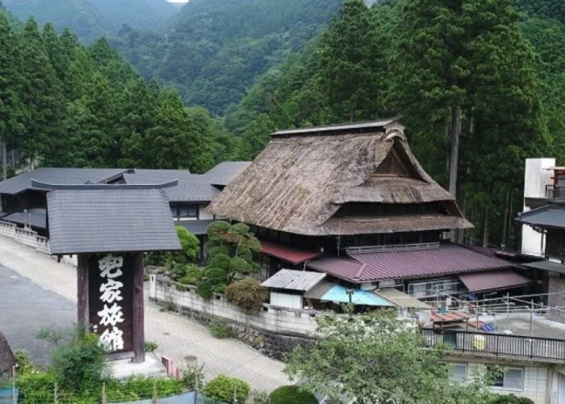
築250年のカブト造りと呼ばれる茅葺屋根の古民家を利用した旅館。囲炉裏のある客室があり、風情たっぷり。檜原温泉・数馬の湯はアルカリ性単純温泉で、疲労回復などに効くといわれています。山菜や猪鍋など山里料理が味わえます。
参照：TOKYO GROWN
| 名称 | 兜家旅館 |
| 電話番号 | 042-598-6136 |
| 住所 | 〒190-0221 西多摩郡檜原村数馬2612 |
| アクセス | JR武蔵五日市駅から西東京バス数馬行きで1時間、バス停：数馬下車、徒歩10分 |
| 定休 | 木曜日 |
| 駐車場 | 40台 |
自然人村
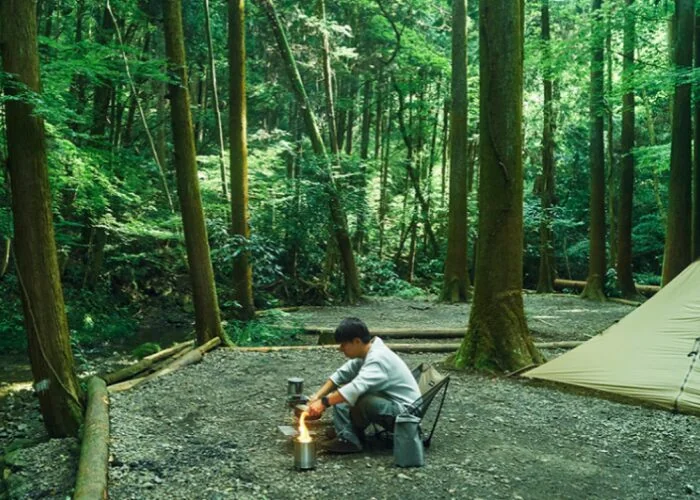
山を上り、谷を下った先に現れる森に囲まれたWildernessリゾート『自然人村』渓流で遊び、食材で地域を感じ、サウナと森林豊かな空気で身も体も整える。多様な『アウトドアアクティビティ』を組み合わせて『体験することで生まれるコミュニティ』と『心の癒し』が両立する世界です。
参照：自然人村
| 名称 | 自然人村 |
| 電話番号 | 070-3985-4878 |
| 住所 | 〒190-0172 東京都あきる野市深沢198 |
| アクセス | ・JR五日市線 武蔵五日市駅下車 徒歩約20分 ・圏央道 あきる野IC より約20分 |
| 定休 | なし |
| 駐車場 | BBQの場合は有料駐車場あり。他のご利用の際はお問合せください。 |
あきる野市周辺の温泉スポット2選
瀬音の湯
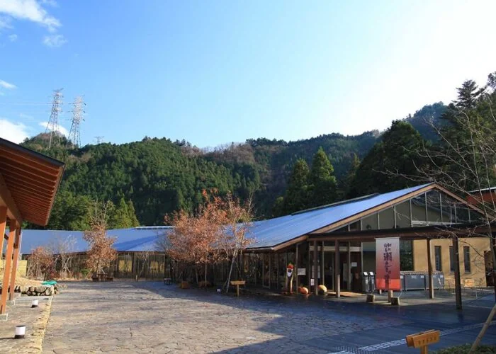
浴槽からの大きな窓越しの風景は、春は新緑、夏の深緑、秋は紅葉、冬の雪景色が私たちを楽しませてくれます。湯の香りとヌルヌルとした湯ざわりの柔らかさに包まれながら、ゆっくりと温泉をお楽しみ下さい。
参照：瀬音の湯
| 名称 | 瀬音の湯 |
| 電話番号 | 042-595-2614 |
| 住所 | 〒190-0174 東京都あきる野市乙津565番地 |
| アクセス | ・あきる野I.C.から約30分 ・JR武蔵五日市駅 拝島駅からJR五日市線に乗車（約22分） ・駅前バスターミナル(1)番のりば『瀬音の湯経由上養沢行き』乗車（約17分） |
| 定休 | 12月～6月：火曜日（詳しくは公式ホームページをご参照ください） |
| 駐車場 | 135台 |
つるつる温泉
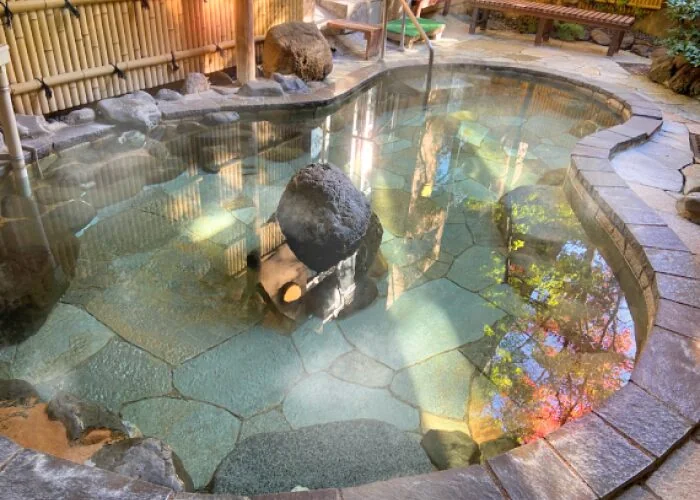
平成８年１１月にオープンしました天然温泉です。
地下１５００ｍから汲み上げる温泉はアルカリ成分が高く、ひとたびお湯につかれば、その名の通りお肌がつるつるします！！参照：つるつる温泉
| 名称 | つるつる温泉 |
| 電話番号 | 042-597-1126 |
| 住所 | 東京都西多摩郡 日の出町大久野4718 |
| アクセス | ・JR五日市線東秋留駅より徒歩で15分 ・武蔵五日市駅より路線バス「つるつる温泉行き」がございます。 |
| 定休 | 毎月第3火曜日 他年2回、設備点検休館がございます。 |
| 駐車場 | 駐車場 130台（無料） |
あきる野市周辺のレジャースポット5選
森のおもちゃ美術館
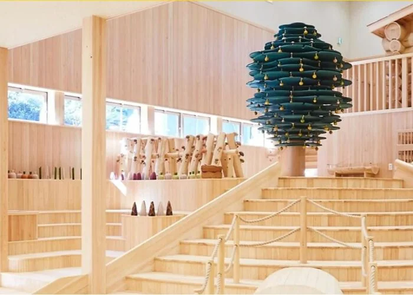
檜原村は、島しょ部をのぞく東京都の中で唯一の「村」であり、都心から約50㎞はなれた東京の西に位置する緑豊かな大自然の中にあります。南は山梨県、神奈川県に接し北は奥多摩町に、そして東側がわずかにあきる野市に向けて山が開け、村外への交通路となっています。総面積の93%が森林。平坦地は少なく、村の大半が秩父多摩甲斐国立公園に含まれています。
参照：森のおもちゃ美術館
| 名称 | 檜原森のおもちゃ美術館 |
| 電話番号 | 042-588-4044 |
| 住所 | 〒190-0204 東京都西多摩郡檜原村小沢3783番地 |
| アクセス | ・JR五日市線 武蔵五日市駅下車後、西東京バス・「藤倉行き」のバス（1番のりば） 「小沢（おざわ）」バス停（乗車時間 約30分）から徒歩2分 |
| 定休 | 毎週木曜日、年末年始ほか |
| 駐車場 | 第1・第2駐車場をご用意しています。 |
秋川漁業組合
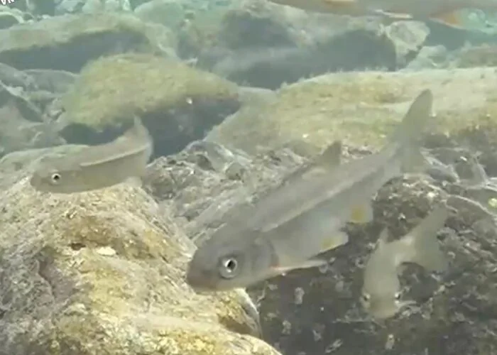
都心から60分の清流 アユとヤマメの里、秋川。
大自然の中で釣りを楽しんでいただけます。
| 名称 | 秋川漁業協同組合 |
| 電話番号 | 042-596-2215 |
| 住所 | 東京都あきる野五日市1252（仮事務所） |
| アクセス | JR五日市線 武蔵五日市駅より徒歩10分 |
| 定休 | なし |
| 駐車場 | 周辺駐車場をご利用いただけます。詳しくはお問合せください。 |
近藤醸造株式会社
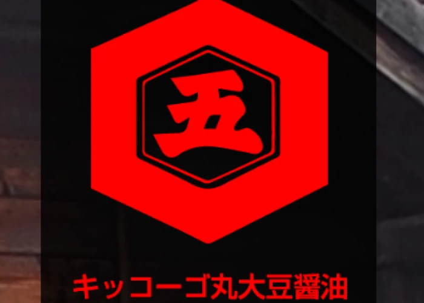
五日市街道沿い、秋川渓谷の入口に醤油造り一筋一世紀になろうとしている近藤醸造株式会社はあります。
清流秋川と緑豊かな多摩の山裾、澄んだ空気とおいしい水、自然に恵まれたこの地は醤油造りに適しているようです。
この自然と人が織りなす風土によって生まれるキッコーゴ丸大豆醤油。独特のコクと優雅な香りを持つ醤油を造り続けてきました。参照：近藤醸造株式会社
| 名称 | 近藤醸造株式会社 |
| 電話番号 | 042-595-1212(代表) |
| 住所 | 〒190－0144 東京都あきる野市山田733－1 |
| アクセス | ・中央高速道 八王子第２ICより20分～25分（通常） ・JR五日市線 武蔵増戸駅より徒歩15分（約1.2Km） |
| 定休 | 年末年始 |
| 駐車場 | 5台 |
みつばちファーム
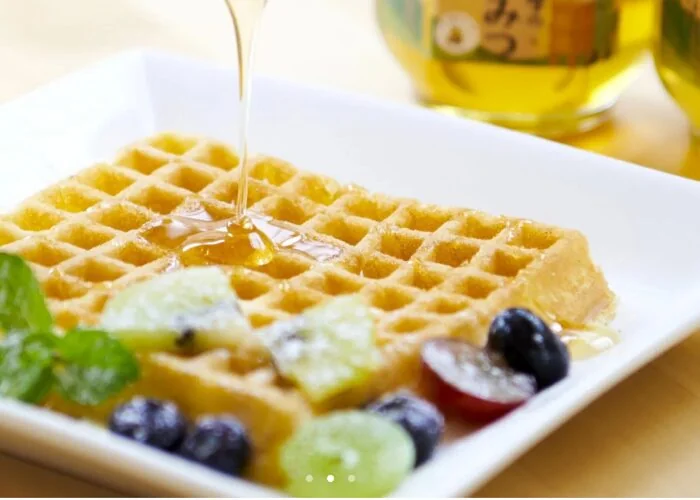
弊社では、自社養蜂部の生産する「多摩のはちみつ」の他に、ブラジル産の質の高いプロポリスの原塊から抽出する「プロポリス濃厚エキス」や台湾産のローヤルゼリーと多摩のはちみつで作る「はちみつ生ローヤルゼリー」、オーストラリア産のジャラハニーとプロポリスで作る「ジャラX プロ」など、独自の手法で製品化しています。
参照：みつばちファーム
| 名称 | みつばちファーム |
| 電話番号 | 042-519-9327 |
| 住所 | 〒190-0143 東京都あきる野市上ノ台37-3 |
| アクセス | ・中央自動車道八王子第2 ICより約15km ・JR五日市線 武蔵増戸駅より徒歩12分 |
| 定休 | 水曜日 |
| 駐車場 | 12台 |
あきる野市周辺の飲食スポット5選
黒茶屋
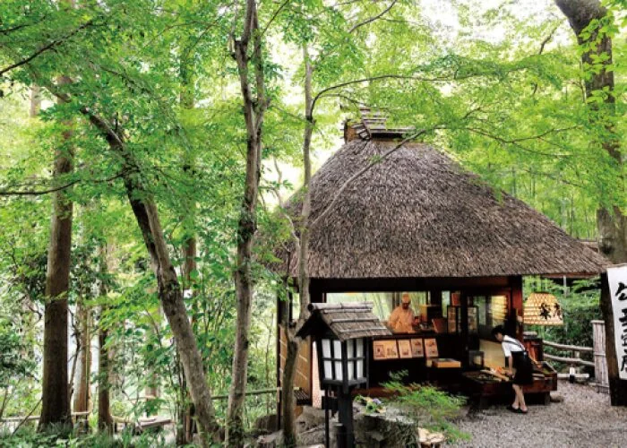
東京のはずれのあきる野に、三百年前に建てられた庄屋づくりの家が今も静かに佇んでいます。それは、まるで山里のふる里の家。門の前の水車がコットン、コットンと昔物語を語り続けます。
参照：黒茶屋
| 名称 | 黒茶屋 |
| 電話番号 | 042-596-0129 |
| 住所 | 〒190-0165 東京都あきる野市小中野167 |
| アクセス | ・圏央道あきる野インターチェンジから15分 ・中央道八王子インターチェンジから25分 ・JR武蔵五日市駅からお車で5分 |
| 定休 | 火曜日・他に不定休あり |
| 駐車場 | 60台 |
燈々庵
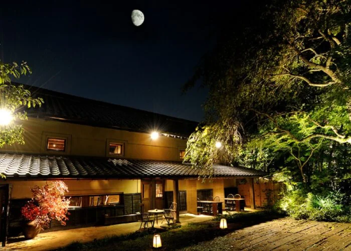
江戸期より十七代の永きにわたり連綿と続いております旧家の
邸宅敷地内の土蔵を改装いたしました。食処とギャラリーでございます。この歴史ある空間の中でくつろぎの時をお楽しみ下さい。参照：燈々庵
| 名称 | 燈々庵 |
| 電話番号 | 042-559-8080 |
| 住所 | 〒197-0821 東京都あきる野市小川633 |
| アクセス | ・中央道八王子インターチェンジから20分 ・圏央道のあきる野インターチェンジ、日の出インターチェンジからは15分 ・JR五日市線東秋留駅より徒歩で15分 |
| 定休 | 火曜日・他に不定休あり |
| 駐車場 | 20台 |
信州安曇野手打ち蕎麦 たか瀬
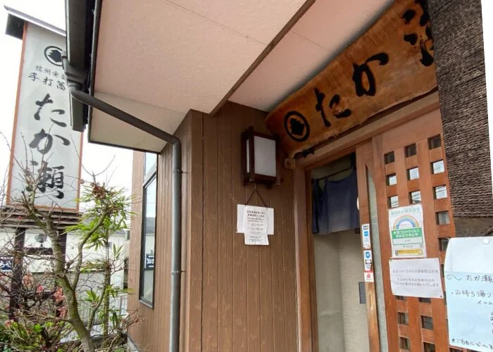
手打ちの二八蕎麦を提供する、土日ともなると行列必至の人気店です。長野県産と北海道産の蕎麦粉をブレンドしており、味が濃いのが特徴。
また、蕎麦だけでなく、蕎麦がきを使ったお汁粉やあんみつもあるので、食後のデザートにいかがでしょうか。
| 名称 | 信州安曇野手打ち蕎麦 たか瀬 |
| 電話番号 | 042-519-5779 |
| 住所 | 〒190-0144 東京都あきる野市山田508-6 |
| アクセス | JR五日市線武蔵増戸駅から徒歩 武蔵増戸駅から626m |
| 定休 | 毎週火曜日定休 ※月曜日は11:00〜15:00のみ営業 また、月曜・火曜が祝祭日の際は通常営業いたします。 |
| 駐車場 | 8〜10台 |
そば処 花がき
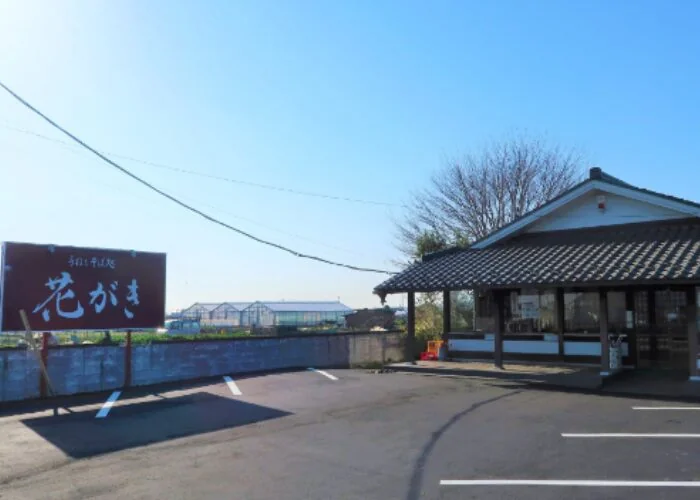
当店では、厳選された国内産玄蕎麦を使用しており、打ちたて茹でたての風味豊かな蕎麦をお楽しみいただけます。
また、檜原村産舞茸の天ぷらが絶品です。季節の野菜天ぷら10種もおすすめです。
| 名称 | そば処 花がき |
| 電話番号 | 042-559-7081 |
| 住所 | 〒197-6814 東京都あきる野市二宮608 |
| アクセス | ◆お車でお越しの方◆ ・五日市街道沿い （市役所より西へ約5分） ・畑の真ん中（秋川ファーマーズセンターと秋留台公園の間です。） ・圏央道 [あきる野IC]または[日の出IC]から約15分です。 ◆電車で来られる方◆ ＪＲ五日市線 東秋留駅より徒歩で約10分です。 |
| 定休 | 火曜日、年始 |
| 駐車場 | あり |
石臼挽手打蕎麦 いぐさ
東京シャモやTOKYO-X（東京の地域特産豚肉）などを使用した料理が味わえるお店です。山菜やタケノコ、とうもろこしなどの食材を使用し、季節を感じられます。
| 名称 | 石臼挽手打蕎麦 いぐさ |
| 電話番号 | 042-558-8590 |
| 住所 | 〒197-0825 あきる野市雨間673-4 |
| アクセス | ＪＲ武蔵五日市線 秋川駅、東秋留駅、共に車で約 5分 圏央道あきる野インターから、車で約10分 |
| 定休 | 水曜日、木曜日 |
| 駐車場 | 12台 |
あきる野市周辺のお土産スポット4選
秋川ファーマーズセンター
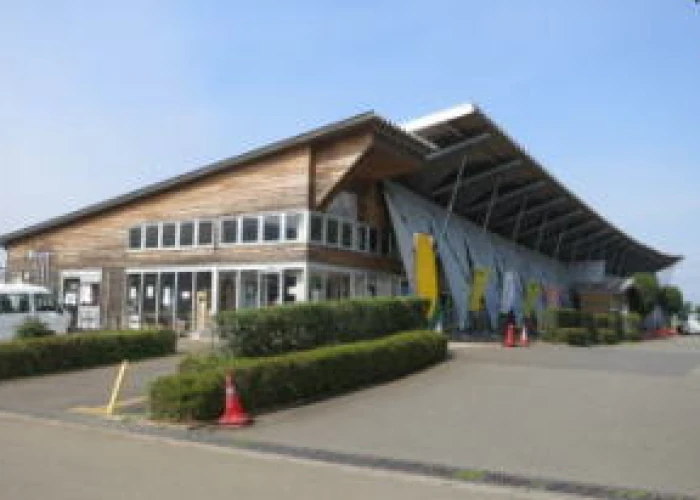
地元農家の育てた安全・安心な採れたて野菜が並びます。年間を通してトマト、春はのらぼう菜、初夏はトウモロコシ、夏はショウガが有名です。
都内最大級の直売所として、地元のお客様はもちろん、観光客の方や地方・海外からの視察団も訪れます。参照：JAあきがわ
| 名称 | 秋川ファーマーズセンター |
| 電話番号 | 042-559-1600 |
| 住所 | 〒197-0814 東京都あきる野市二宮811 |
| アクセス | 東秋留駅から徒歩7分 |
| 定休 | 年末年始 |
| 駐車場 | 75台 |
ワイナリー Vineyard TAMA
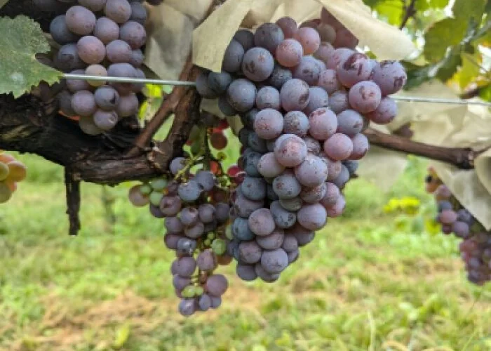
東京で育てたブドウで「東京」のワインを造る――。東京の西部を流れる秋川近くの扇状地で農園と醸造所を経営するヴィンヤード多摩（東京都あきる野市）は5年前から自社産のワインを販売している。栽培面積を広げながら地元に適したブドウの品種を追求し、理想のワイン造りを目指す。
参照：日本経済新聞
| 名称 | Vineyard TAMA |
| 電話番号 | 042-533-2866 |
| 住所 | 〒190-0143 東京都あきる野市上ノ台55 |
| アクセス | 武蔵増戸駅から徒歩で9分 |
| 定休 | 火曜日 |
| 駐車場 | 10台 |
中村酒造
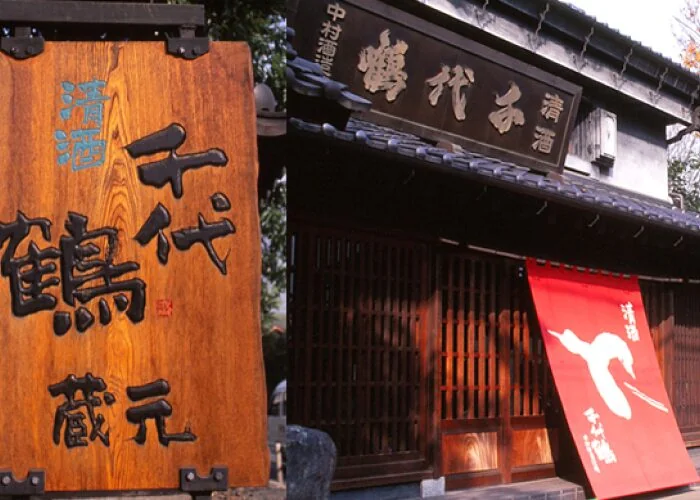
酒造好適米を高精白し、和釜に甑（こしき）、蓋麹（ふたこうじ）などの手造りの要素を多く残しつつ、全自動製麹機などの近代的な酒造技術を取り入れて丁寧に造っています。
これにより、淡麗型でありながらも米の旨みをしっかりと感じられる清酒を醸しています。参照：中村酒造
| 名称 | 中村酒造 |
| 電話番号 | 042-558-0516 |
| 住所 | 東京都あきる野市牛沼63 |
| アクセス | JR五日市線 秋川駅下車 徒歩約11分 |
| 定休 | 年末年始 |
| 駐車場 | 数台分あり |
野崎酒造
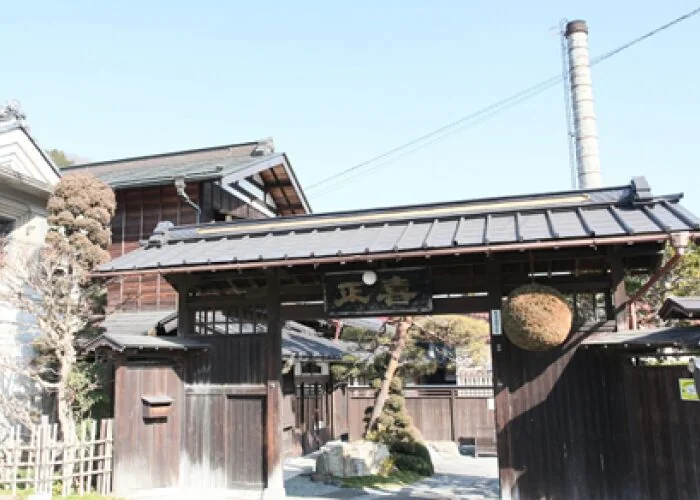
正の仕込み水は、蔵正面の戸倉城山より湧く、伏流水を使用しています。この水は古くから戸倉の人々の生活水として用いられ、現在でも大切に維持管理されています。水質はやや軟水で酒の品質を劣化させる「鉄」「マンガン」が非常に少なく、酒造りに大変適した水です。この水は喜正の「宝」です。
参照：野崎酒造
| 名称 | 野﨑酒造株式会社 |
| 電話番号 | 042-596-0123 |
| 住所 | 〒190-0173 東京都あきる野市戸倉63 |
| アクセス | 武蔵五日市駅からバスで8分 |
| 定休 | ・11月、1月（仕込み期間）：日曜日･祝日 ・2月～10月：土日祝 |
| 駐車場 | あり |
あきる野市の周辺観光を楽しもう
花火大会当日は、イベント会場内でフードコートやダンスショーなどの催しがあるものの、秋の紅葉を満喫しながらゆっくり観光に回るのも1つの手です。
癒やしスポットや体験スポットなど、あきる野市の魅力を感じながら、花火大会にお越しください。